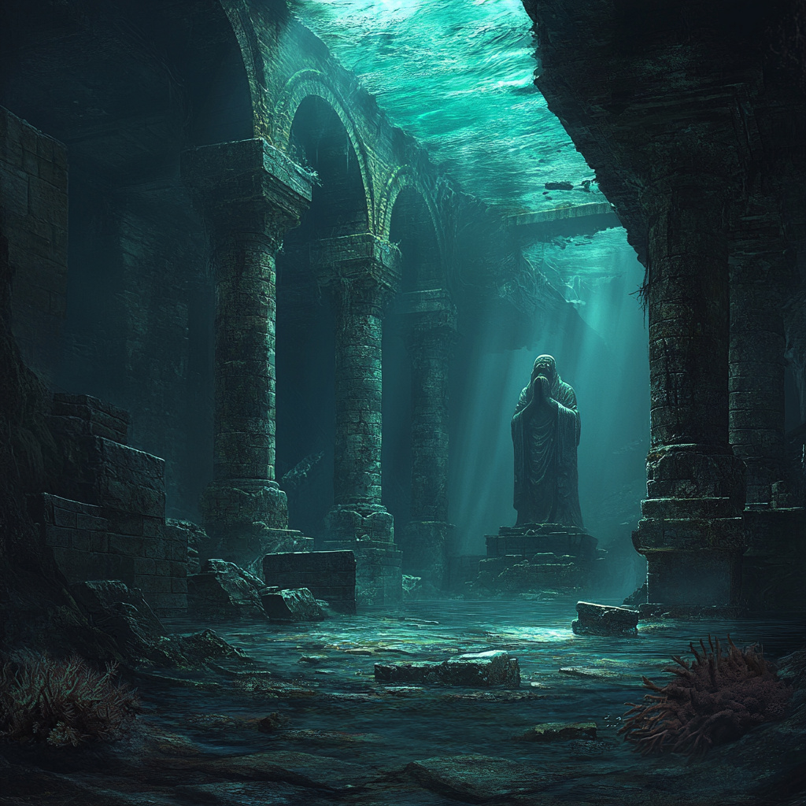
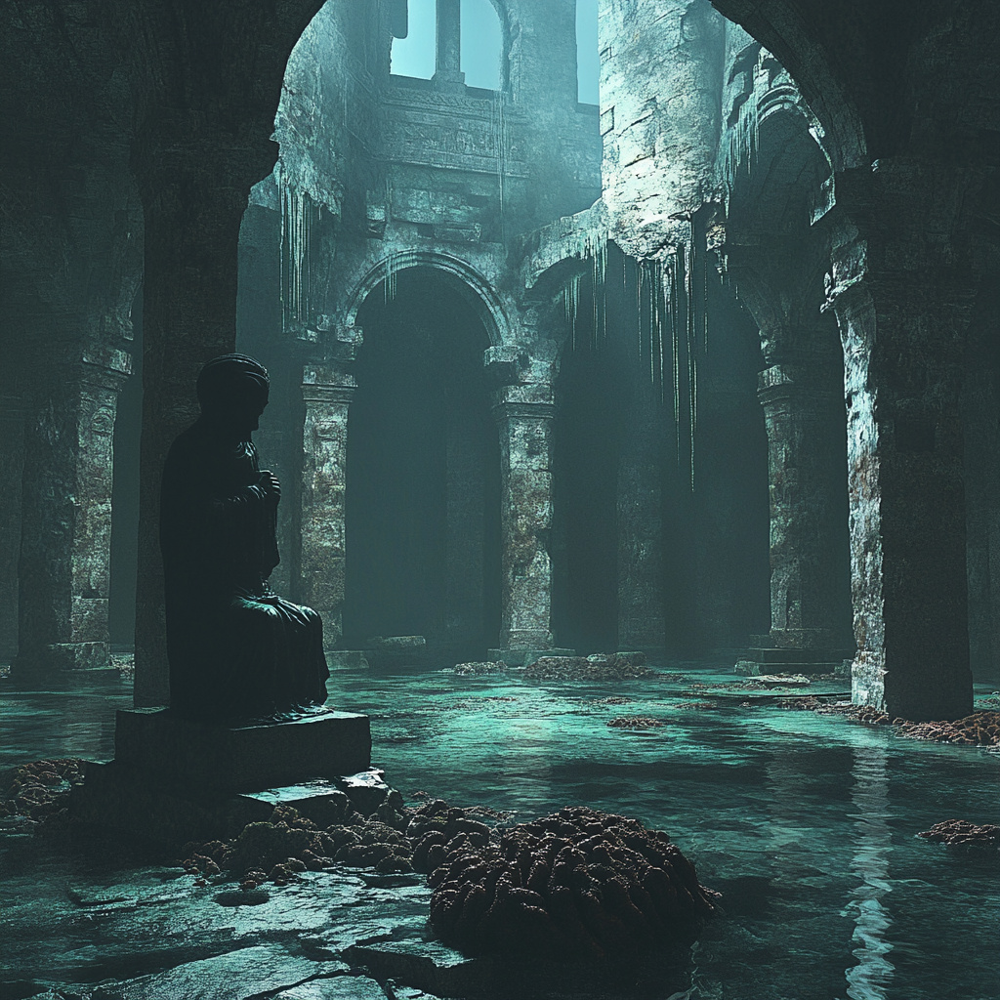
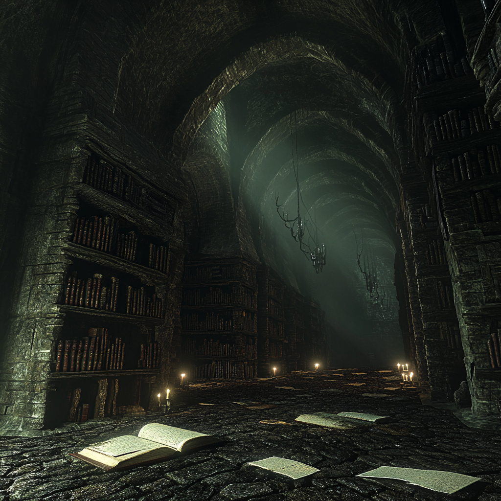
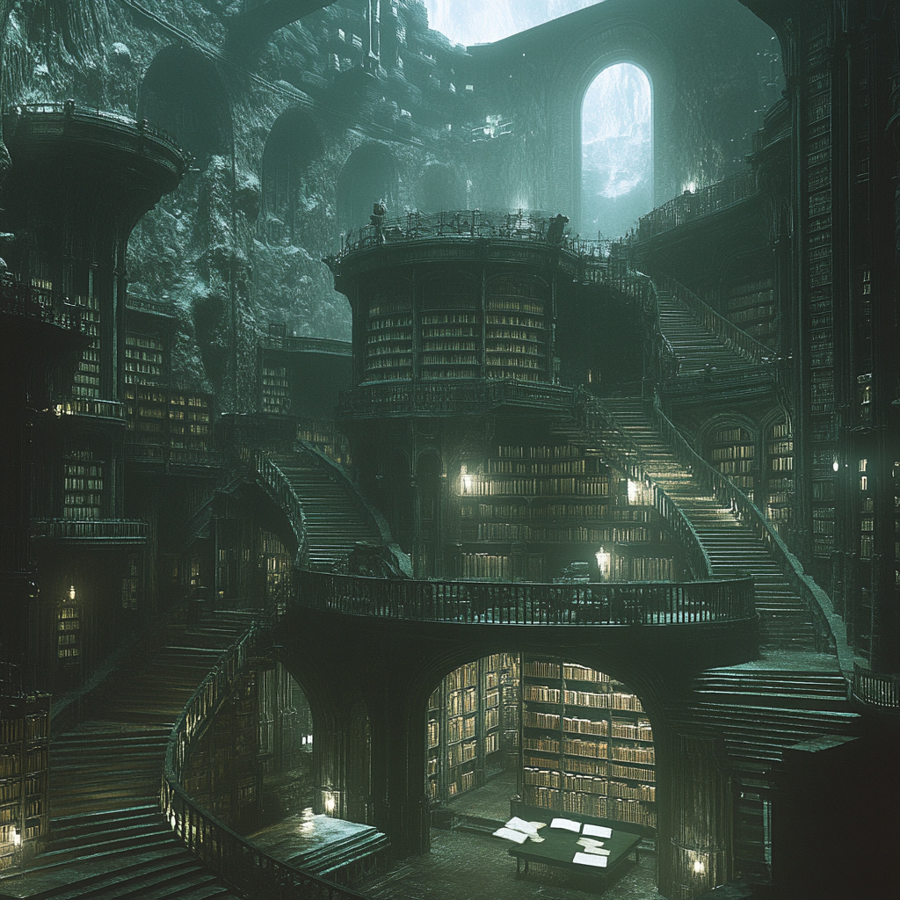
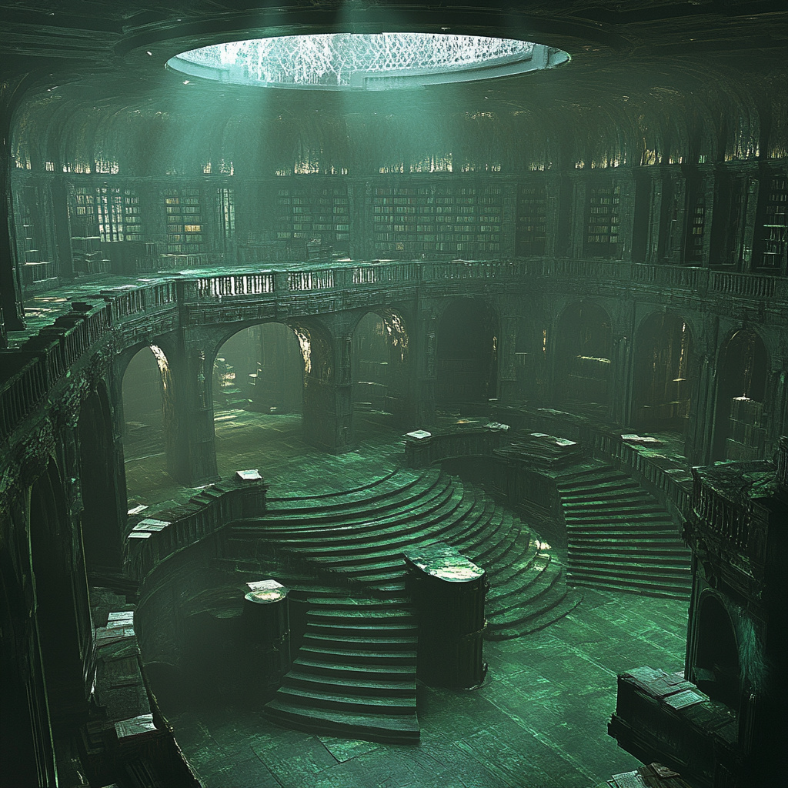

Game & Tech Designer passionate about video games as systems — their structure, design, and construction. I craft experiences centered on the player's intent and interactivity: what they feel, what they understand, and how space guides their decisions.
An effective communicator across disciplines — designers, programmers, artists. I'm proficient in Unreal Engine 5 and actively integrate AI tools (Claude Code, ChatGPT) into my workflows to accelerate the design of tools that help produce efficient Blueprint prototypes. These tools also benefit my colleagues and allow them to speed up their own workflow and processes.
Currently QA Analyst at Big Bad Wolf Studio, I'm simultaneously building my skills by developing game concepts and sharpening my personal abilities in video editing and production through a YouTube channel dedicated to video games — ask me about it, I'd love to talk!
Passionate about video games as systems — their structure, design, and construction. Effective communicator across disciplines. Calm, rigorous, and dedicated. Solid gaming culture built over several decades.
Design
Level Design · Game Design
3C Design · Systemic Design
Blockout / Grayboxing
Spatial Storytelling · UX
Balancing · GDD
Engines & Tools
Unreal Engine (Blueprint, World Building, Packaging)
Unity
SVN · Jira · Trello · Notion · ClickUp
DaVinci Resolve
QA & Technical
Test plans · Regression testing
Bug tracking · Static review
XSX SDK · PS5 SDK
Branch workflow · CI Builds
AI & Scripting
Claude Code · ChatGPT
Building tools to accelerate design and QA workflows
Interests
Sound Design
Weightlifting · Boxing
YouTube (game design analysis)
Experience
QA AnalystDec. 2023 – Present
Cthulhu: The Cosmic Abyss · Big Bad Wolf Studio
QA Analyst / Tester on Cthulhu: The Cosmic Abyss
Design and execution of test plans, regression testing, detailed bug reports — PC, Xbox Series X, PS5
Design feedback on Game / Level / UX and player experience
Collaboration with artists & programmers to prototype and iterate on mechanics
Creation and editing of post-production cinematics
Game DesignLevel DesignSound DesignLead ProjectOnline Co-opSteam
Where Are You? is an online cooperative puzzle game in which two players must progress through test rooms set up by a superior intelligence, with the aim of testing human thinking ability.
Game DesignLevel DesignSound Design48h Game JamUp to 4 players
Winner of the Ynov Game Jam 2022 (theme: limited space) and the Jury's Favorite award at CNPLAY Gaming Show. Bomber Bash is a competitive multiplayer party game, where you have to destroy the terrain to make other players fall, and be the last one standing on the field to win the match.
My Roles
Concept & GD
Finding the concept, Game, Level and Sound design, creating documentation and tech structure.
Direction
Giving direction to the project and working with 7 team members in 48 hours.
Level Design
4 environments: Medieval Castle · Beach · Disco Club · Japan.
Sound Design
Full audio direction on the project.
Gameplay Video
Content produced in 48h
Inspired by Fall Guys and Bomberman, up to 4 players, we managed to produce:
4 environments: Medieval Castle · Beach · Disco Club · Japan
The jam theme was Limited Space. By choosing a destructible terrain, the game sticks perfectly to the theme: the more you play, the more space shrinks, the more pressure builds.
2D UI inside the game — Artist: Baptiste Diehl. Thank you!
Game DesignLevel DesignSound DesignBlueprintSteamAndroid
Student project turned real game. Built from scratch with Unreal Engine 4, Turbo Light Rush is a Synthwave Run & Gun released on Steam and Google Play. 13 levels, 3 worlds, an original OST, a boss fight, an "Endless" mode, and two different endings.
The concept was built on three pillars: Fun · Synthwave · Speed. References included Sonic Runners Adventures, Super Mario Run, Geometry Dash, Jetpack Joyride, and more.
World Structure
World 1: easy and accessible. Tutorial introduces main mechanics — Dash & Jump, Fire & Jump, Fire & Dash.
World 2: harder, same mechanics. Includes the "Glitched" level — all LD bricks are slightly glitched, tied to the game's lore.
World 3: difficulty spikes drastically. The main villain's world. Boss Level at the end — 3 Core Reactors to hit during the run deal damage to the boss. Credits + bonus soundtrack unlock on completion.
Sound Design
All songs and sounds in Turbo Light Rush were created in FL Studio. A special track was composed to replace the Level 7 song for the Steam release.
Six months of work later, the game was released on Google Play, then on Steam with the Boss Fight and new features added. We are really proud of our game — we made an entire game from scratch.
For this project, I set myself a goal: to design a large area divided into three interconnected sections, each with its own unique atmosphere, aiming to form a coherent whole where the environment and its narrative play a significant role.
The overall setting depicts a monastery isolated from the rest of the world, where a dark threat seems to have been contained until something went wrong. The player will need to understand what happened — and what is at stake.
Artistic Direction
The artistic direction is based on a ruined monastery, with a church occupying the central place. Religious icons, along with extensive environmental and textual storytelling, provide the player with the necessary clues to understand the events that transpired. These elements are not mandatory but greatly enhance comprehension, enabling the player to make a clear and informed choice when faced with the NPC dialogue.
3 Interconnected Zones
Zone 1 — Starting area / spawn point: small outer courtyard, dining hall, and main bridge. This area already contains the main gameplay/scripting elements introduced throughout the level.
Zone 2 — Main building: a long corridor adorned with paintings telling the story of the warrior monks, a cell containing a strange being. Two secret passages connect to the church roof and the waterfall area.
Zone 3 — The church and balcony: additional descriptive elements, a door leading to a tomb carved into the rock containing the level's final interactive element.
Level Design
Platforming and orientation: the level is highly vertical. No fall damage — the only way to die is to exit the level boundaries (respawn at start, progress kept). Good orientation and observation skills are required.
Strong verticality and narrative: secret passages allow moving from the water area to the church ceiling. The entire level can be traversed from the lowest to the highest point.
Numerous narrative elements throughout: paintings, bodies, objects, statues. Environmental and textual storytelling inform the player about what happened. The player can collect objects and exit without reading, but won't understand the NPC dialogue or why a bad ending is triggered.
Player guidance is achieved through light direction/intensity and points of interest — stained glass windows, statues, viewpoints. From the main bridge, a waterfall and nearby interactive elements are visible, drawing the player to find one of the secret passages.
Game Design
Two different endings: a good and a bad ending. The elements needed to understand both are scattered throughout the level — the player chooses.
8 relics to collect and explore: the first one signals there are 8 total (1/8 collected). Exploration reveals all hiding spots.
Gameplay loop: Objective — find 8 relics and exit with the good ending. Challenge 1 — find all relics to unlock the exit door. Challenge 2 — be tested by the NPC dialogue, demonstrating determination or yielding to ease. Reward — exit with the good ending screen.
Blueprint — Scripted Systems
Master Widget: interactive contextual widget displayed each time the player interacts with an element, blocking controls until "OK" is confirmed.
NPC Dialogue System: dialogue box that evolves and offers a choice if the player possesses a specific item.
Elevators, doors, and keys: elevator height adjustable directly in the editor. Locked doors require keys scattered through the level.
Secret passages: opened remotely via a "button", with a camera switch showing which door has opened.
Interaction key (E): depending on what the line trace hits, different information is displayed. Cascading verification process — additional elements can be added easily.
Assets from Quixel Megascan library on Unreal Engine 5.
Custom puzzle level created using the Portal 2 game editor. The main theme is Laser Beams. The aim is to use a laser beam to ricochet off different points to trigger the appearance of a reflective cube, which is then used to open the level's exit door.
Gameplay Video
Design Intent
Verticality is a component I try to implement in all the levels I build. In this puzzle, the "understanding twist" comes when the player spots the laser reception point located high up — with their back to it as they enter — and understands they have to use a portal above the exit door.
Difficulty & Iterations
Difficulty 2 out of 4 on a predetermined scale. Accessible, can be completed relatively quickly whether or not the player is familiar with puzzle games. Testing phases took place over several iterations with multiple testers to avoid construction bias.
The full design document is available for download below (in French).
To create these images of a desert planet I used Unreal Engine 5, as well as the new tools it offers to designers, including the Quixel Bridge, which allows access to the entire MegaScans library. I was able to add textures and assets to give life to this environment.
For the generation of the Height Map I used the World Creator tool, and then generated the landscape from the exported height map file.
I also used the PanoraMake plug-in, created by Sylvain Lebeau, which allows creating extremely detailed landscapes through a system of masks applied on the landscape — bringing the necessary variety to the terrain.
Cthulhu: The Cosmic Abyss
QA AnalystQuest DesignPost-production video editingBig Bad Wolf StudioUE5Dec. 2023 – Present
Game Pitch
The year is 2053. Around the world, the occult threat is becoming less and less discreet, and numerous strange events beyond human understanding are being reported. As resources on the surface of the Earth grow increasingly scarce, powerful corporations turn to the unexplored depths of the oceans, unaware of the ancient horror they are about to awaken.
In this tense thriller inspired by the universe of Lovecraft, you play as Noah and investigate the mysterious disappearance of miners in the depths of the Pacific Ocean. With the help of your AI companion, Key, explore the vast labyrinthine prison of R'lyeh — an ancient sunken city of cyclopean dimensions — and attempt to resist the corruption of the mind caused by Cthulhu's influence. At its heart lies a secret that could shatter your understanding of reality.
My Work at Big Bad Wolf Studio
QA Analyst
Static review of Game Design and Narrative documentation. Gameplay review of quests and entire levels for UX optimization.
QA Tester
Identifying and reproducing bugs across gameplay systems, UI, and environmental interactions. Structured documentation with prioritization and player impact assessment.
Quest Design (non-included in game)
Static review of Quest Design documentation, identifying flaws and questioning narrative coherence and quest context.
Post-production video editing
Post-production editing of in-engine cinematics. Delivered 3 proposals to the direction — the selected version ("Red Eyes") is in the final game.
Technical Versatility & Creative Vision
My work on Cthulhu: The Cosmic Abyss extended well beyond standard QA. I operated in a cross-disciplinary role combining quality analysis, global design participation, and cinematic design — contributing at several levels of the production pipeline, from systemic game analysis to environment art pipelines, while improving the stability and readability of the overall player experience.
Quality Assurance & Systemic Analysis
As a QA Analyst, my work extended beyond simple bug detection. The main objective was to ensure the functional and structural coherence of the game within a production environment using Unreal Engine 5. This role required a technical understanding of Blueprint logic, level organization, system interactions, and performance constraints.
The QA approach I followed relied on systemic analysis: understanding how individual systems interact with each other in order to anticipate side effects and improve the overall robustness of the project. Analysis of emergent behaviors in order to identify deeper design or implementation problems. Communication with development teams to help accelerate issue resolution.
Contribution to Global Game Design
Beyond QA, I also contributed to the overall game design, participating in discussions about the structure of certain mechanics and the consistency of the player experience. This contribution focused on gameplay analysis and readability, balancing certain interactions, improving the clarity of gameplay situations, and maintaining coherence between narrative, environment, and mechanics.
In many cases, the process involved transforming an observed problem into a concrete design proposal, while taking into account production constraints and existing systems.
Post-production video editing — "Red Eyes"
I was tasked with taking a sequence of images from Unreal Engine and working on them from a post-production standpoint, upgrading and improving the quality of the sequence. I cut and edited the cinematic, delivering three different versions for the direction to review. The selected version, entitled "Red Eyes", is in the final game.
You can watch all 3 submitted proposals below:
Selected version — "Red Eyes" (in the final game)
All 3 proposals submitted to the direction
Quest Design — The Great Library of Abdul Al-Hazred - NON-INCLUDED IN GAME
As a demonstration of original quest design work — coherent with the game's lore and slotting in directly after Q5 as Q6 / end of game — I designed The Great Sunken Library of Abdul Al-Hazred.
"Abdul Al-Hazred learned, read, and wrote. You who enter will never leave."
Noah has arrived in the Great Library of the Mad Arab, Abdul Al-Hazred, who once managed to imprison the Great Old One using rituals compiled in the Necronomicon. Noah realizes that someone has already done all of this before him — centuries ago. Was all of this only meant to delay the inevitable? To postpone the Great Awakening?
Concept Art — AI Generated
Concept images generated for the quest design document (AI generated, for visualization purposes only)





Objectives
General Objective (displayed when Noah passes through the rock fissure): "Search the Great Library."
Objective 2 (displayed when the player finds the first page of the Necronomicon): "Perform the confinement ritual."
Objective 3 (displayed when the player obtains a complete symbol): "Investigate the second ritual."
Design Intentions
The design intention is to take Noah even deeper into the citadel and make the player realize there is an additional underground level — another layer beneath the citadel — before reaching the Door of Dagon. The emphasis is on descending and navigating a labyrinthine level in which the player must go through all the knowledge compiled by the mad scholar.
The player will be lost within gigantic cyclopean, non-Euclidean archives whose shelves change as the player progresses. A corridor of shelves may hide valuable information, but when Noah turns back, there will be nothing left but a bottomless pit drowned in mist. The labyrinth model from Q3 is adopted to teleport the player into different rooms containing clues.
Between the Archives of the Flesh and the Door of Dagon lies a large, empty, dark corridor. This serves as a pretext for a concluding dialogue between Noah and Key — echoing the whispers heard in Q4, further blurring the boundary between dream and reality. This corridor follows the same concept as the ending hallway in Silent Hill 2, where James confronts his own trauma.
Zone Structure
Zone 0 — Vestibule: Enormous statue of Abdul Al-Hazred, hands extended downward. Doors sealed around the room. 3 out of 4 Eureka path pieces are hidden here. First page of the Necronomicon found at the base of the statue — guiding the player from the very start.
Zone 1 — Archives of the Flesh: Texts carved into bones, parchments of skin, jars preserving organs engraved with scalpel writing. Forbidden knowledge about the Great Old Ones. Labyrinthine, changes according to the player's exploration. High verticality, moving staircases. Second Necronomicon page written on human skin.
Final Zone — The Door of Dagon: Monumental portal covered in moving glyphs. Corruption passes through the door. The Watcher's Chair sits before it, inviting the player to sit and make the final decision: open the door, or seal it forever. A pedestal receives either the Star of Shamash or the Necronomicon.
Dual Path System
Path Critique — The Shadow of the Necronomicon: 3 real Necronomicon pages hidden throughout the level. Each reading increases the player's corruption level slightly. The player can insert pages of their choice into the book — which pages determine which ending triggers. This path flatters the player's ego and puts them in a false sense of confidence.
Path Eureka — The Ancient Light: The player finds 5 golden symbols to position on the Star of Shamash. Hidden from the player, who must deduce on their own that another, more humble path exists — indicated covertly by the Yiths. This path accepts that humanity is not exceptional, and that its only tool is to delay the cosmic reckoning.
Multiple Endings
The ending depends on the combination of: the ritual chosen (Dark Ritual via Necronomicon vs. Light Ritual via the Star of Shamash), the number of genuine pages inserted, and the player's corruption level when they sit in the Watcher's Chair. This system produces multiple distinct endings — from the good ending to the Ultimate Bad Ending where Noah, consumed by Abdul's spirit, kills Elsa and opens the door to Cthulhu.
Unreal Engine Expertise
Through this project, I developed a strong understanding of Unreal Engine workflows: Blueprint logic and gameplay system organization, level management and environmental interactions, integration of cinematic and narrative systems, debugging issues related to system interactions, and understanding technical constraints in real-time projects.
Video Editing & Post-Production
Alongside the project work, I applied solid video editing and post-production skills: narrative editing and pacing, visual composition and graphic treatment, audio synchronization and sound design, color grading and image processing, and optimization of final renders for distribution.
Quest Design Document: The full Notion export of the quest design document for The Great Library of Abdul Al-Hazred is available for download below. Visualization is not optimized but all data is present.